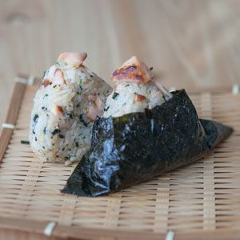

El onigiri se prepararon para poder comer el arroz de una manera sencilla y en cualquier lugar. Un especie de comida para llevar. se conoce sobre ellos desde hace más de 1000 años. Los rellenos de los onigiris pueden ser tan variados como tu imaginación, aunque lo más común es que sean de pescado, generalmente atún o salmón como el de esta receta. Este plato es muy versátil y yo lo suelo preparar mucho como almuerzo para los niños, pues simplemente cambiando el relleno podemos sorprenderlos de mil maneras.
